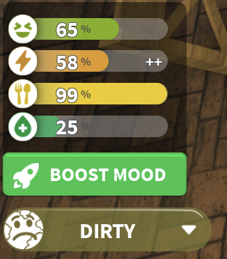
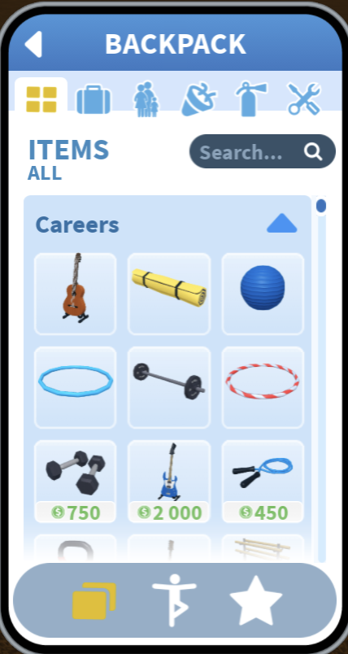
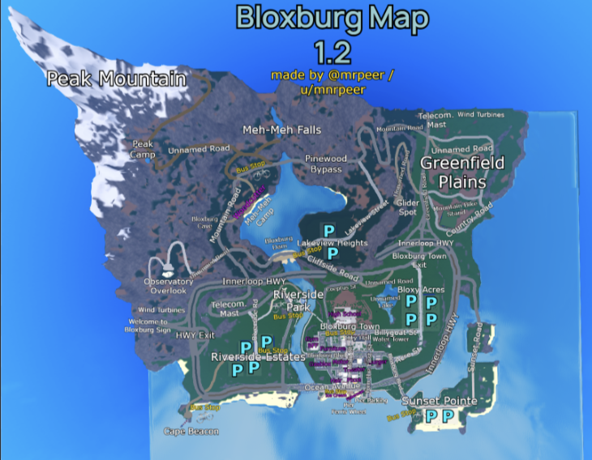

Role-play
Bloxburg has many roleplay aspects that bring the game to life. This includes self care, work, time/weather, a huge map, home appliances, props, and family mechanics.
Self Care
In Bloxburg, you need to take care of your entertainment, energy, food, and hygiene by doing everyday things as you would in real life. In this image, I did not do a good job of this. Some of the consequences of a poor mood are a smelly aura, slow walk speed, and you make less money at work.

Weather, Work, and Time
Bloxburg has a 24-hour time frame where one minute is equal to one hour. The time will always be visible at the top of the screen, and a pop-up will prompt you to go to work in the morning. Weather also gives the game a more realistic feeling, as you never know when it may start raining or thundering.
Click here to learn more about work.
Family, Props, and Interactive Appliances
In Bloxburg, you can invite anyone to your family, and you can be any age you want. Just walk up to a dresser or wardrobe to change your age. The game also has many interactive and usable objects, home appliances, and roleplay props you will find accessible in the toolbox button on your toolbar. This creates huge roleplay possibilities. You can do house chores, play with toys, or chase someone with a chainsaw.

Map

As you can see, the map is very vast, and there is a lot to explore. You can go camping or trekking in the wilderness, visit other neighborhoods, or experience the Town Square. Town Square is the central part of the map, with a variety of businesses, public buildings, and places for players to visit. It brings together shopping, entertainment, and community spaces, making it one of the main areas for everyday activities and roleplay.